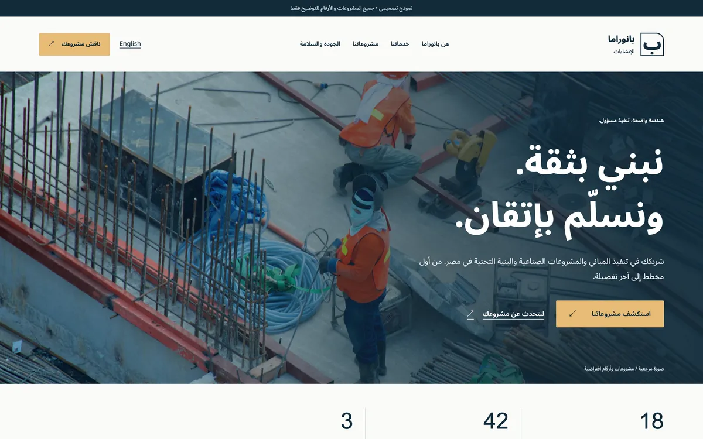
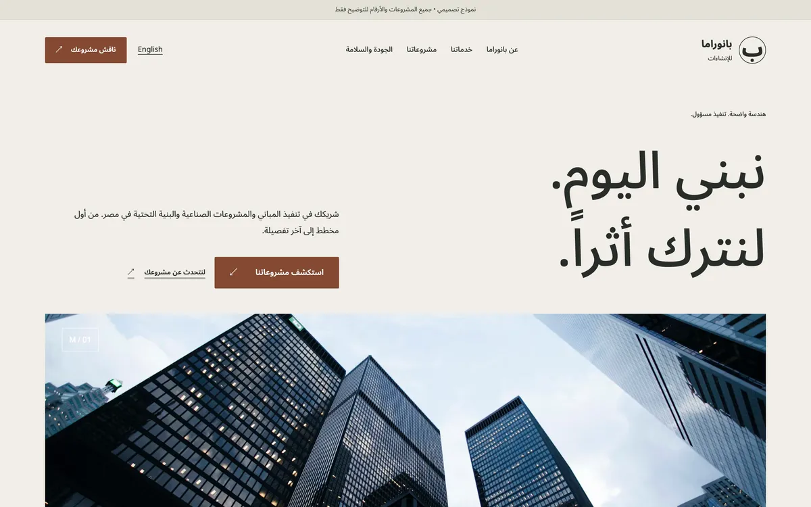
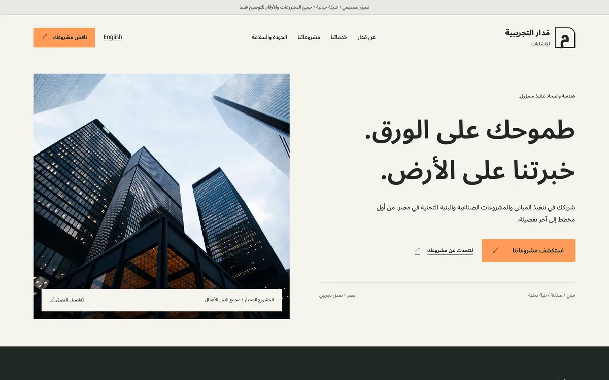
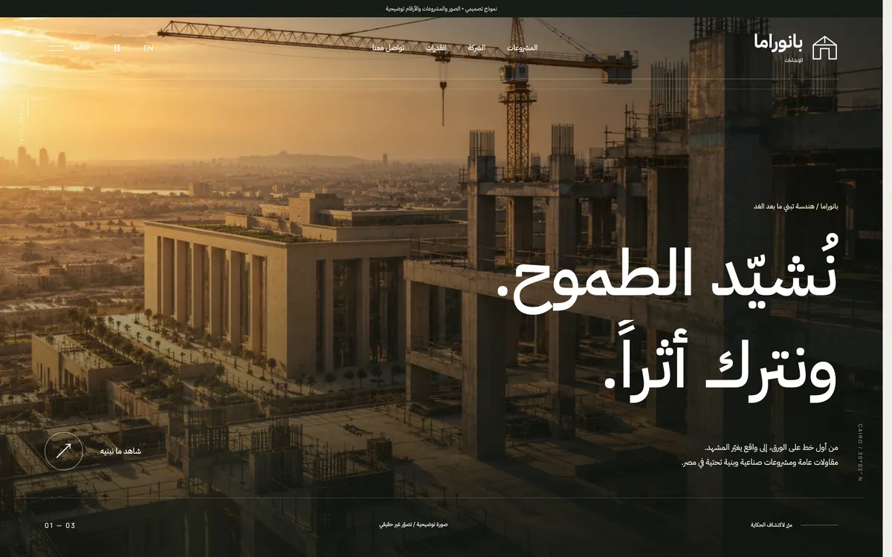
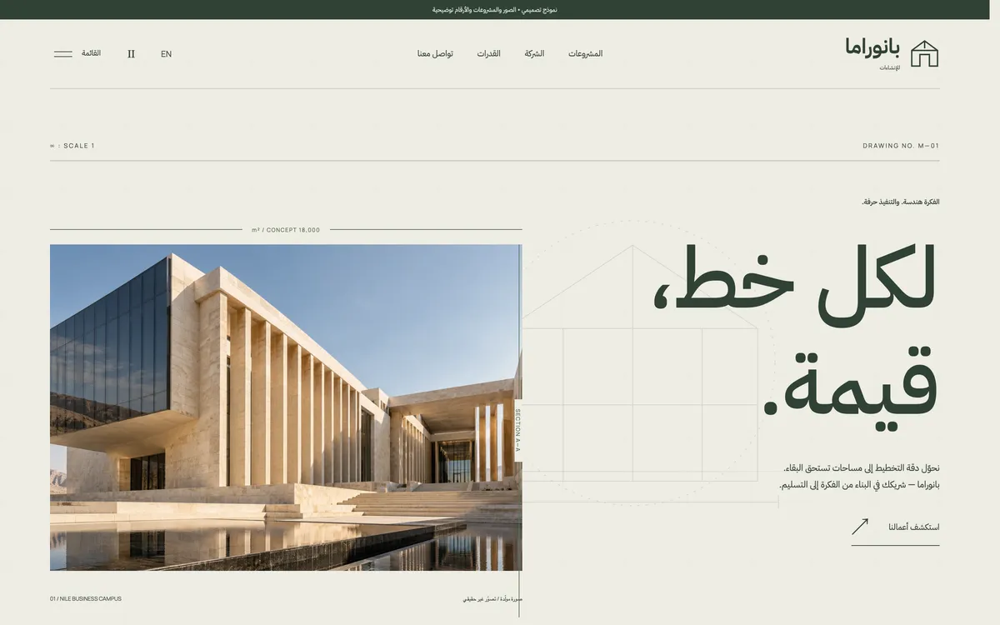
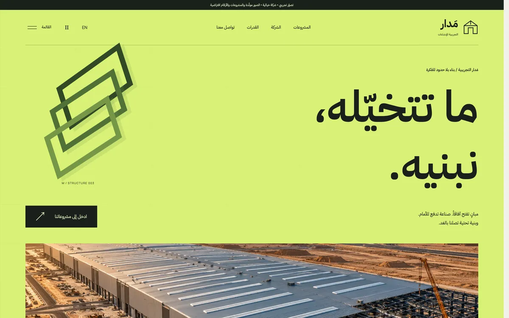
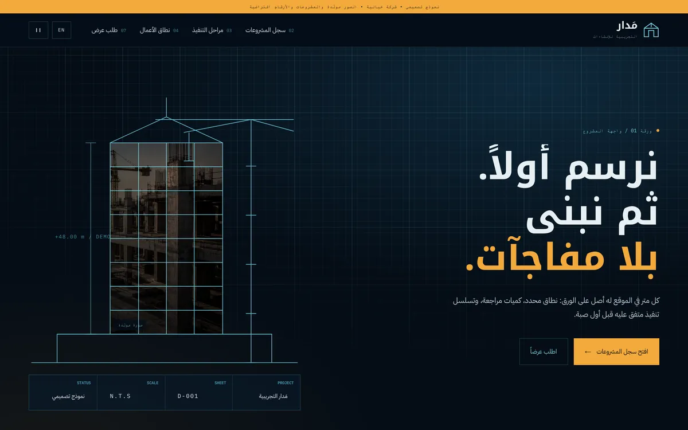
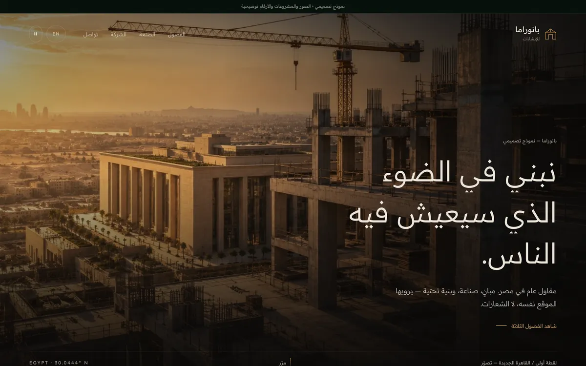
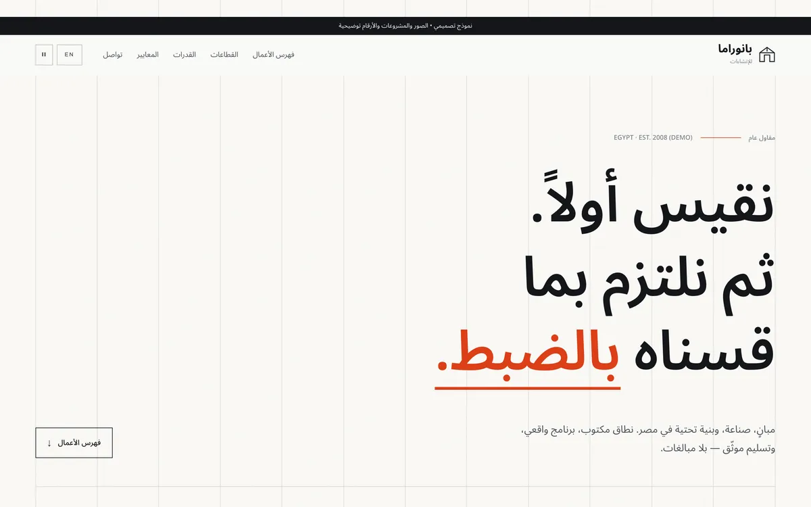
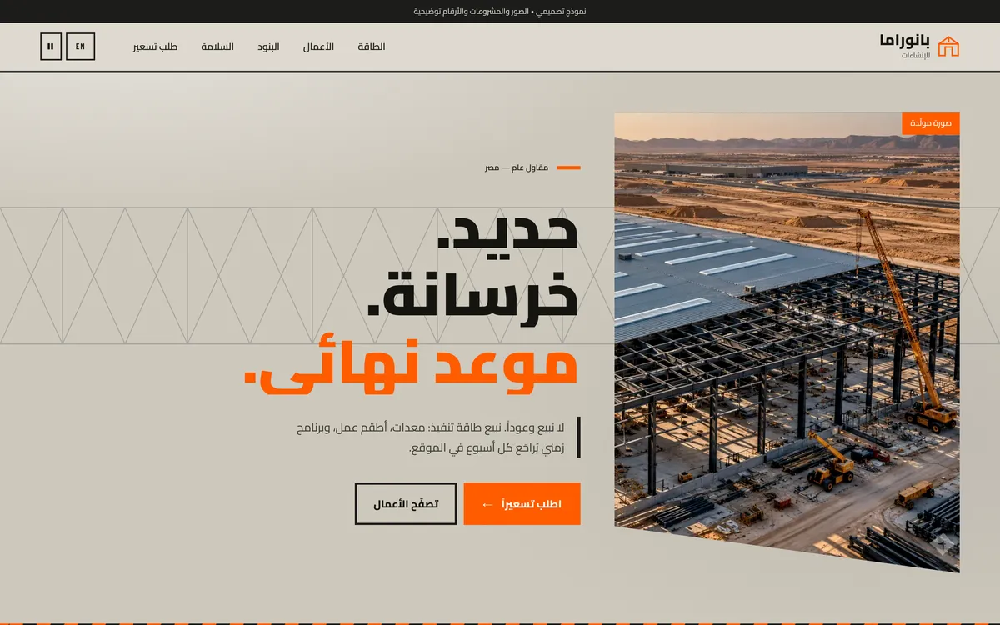

-
A1

الطابع المؤسسي
ألوان كحلية هادئة ولمسات ذهبية، مع صور من موقع العمل. يقدّم الشركة بثقة ووقار، ويبرز سنوات الخبرة والأرقام في مقدمة الصفحة.
-
B1

الهدوء التحريري
خلفية فاتحة ومساحات بيضاء واسعة وخطوط رفيعة. أقرب إلى مجلة معمارية: يترك الصور والنصوص تتنفّس بدل ازدحام الصفحة.
-
C1

المباشر والعملي
يبدأ برسالة الشركة ثم ينتقل سريعاً إلى المشروعات. مناسب لمن يريد أن يصل الزائر إلى الأعمال والتواصل بأقل عدد من الخطوات.
-
A2

السينمائي الدافئ
صورة كبيرة بضوء الغروب تملأ الشاشة، وعناوين واسعة تتحرّك بهدوء. يعطي إحساساً بالحجم والطموح من أول نظرة.
-
B2

الدقة المعمارية
ورق عاجي وخطوط قياس دقيقة وتكوين غير متماثل. يركّز على الحرفية والتفاصيل، ويعطي انطباعاً بشركة تهتم بالجودة قبل الحجم.
-
C2

الجرأة اللونية
لون أخضر لافت وأشكال هندسية متحركة. هوية معاصرة وجريئة تبقى في الذاكرة وتميّز الشركة عن المنافسين بوضوح.
-
D

المخطط الهندسي
يحاكي لوحة رسم هندسي: شبكة قياس، ورسم للمبنى يُرسم أمام الزائر. يعرض بيانات كل مشروع بوضوح شديد — الدور والمساحة والمدة والحالة.
-
E

الفصول السينمائية
خلفية داكنة وصور كبيرة تتبدّل كالمشاهد أثناء التمرير، وكل مشروع يأخذ شاشة كاملة. الأقوى في إبراز جمال المشروعات.
-
F

الشبكة التحريرية
ورق أبيض وخطوط شبكة ظاهرة ولون واحد مميّز يُستخدم بحساب. الأوضح في القراءة، والأسهل في تصفّح قائمة الأعمال ومعرفة تفاصيل كل مشروع.
-
G

الهيكل الصناعي
ألوان خرسانة وبرتقالي السلامة وهيكل حديدي في الخلفية. يعطي إحساساً بالقوة وقدرة التنفيذ — الأنسب للمشروعات الصناعية والبنية التحتية.